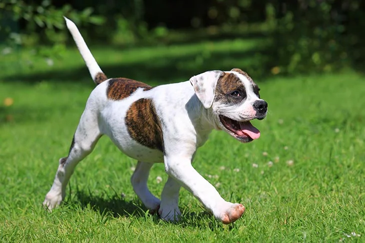

Want to connect with other people who love the same breed as much as you do? We have plenty of opportunities to get involved in your local community, thanks to AKC Breed Clubs located in every state, and more than 450 AKC Rescue Network groups across the country. Founded in 1900, the Airedale Terrier Club of America is the official AKC Parent Club for the Airedale Terrier.

The American Eskimo Dog combines striking good looks with a quick and clever mind in a total brains-and-beauty package. Neither shy nor aggressive, Eskies are always alert and friendly, though a bit conservative when making new friends. The American Eskimo Dog comes in three sizes'standard, miniature, and toy'standing as tall as 19 inches at the shoulder or as short as 9 inches. Distinctive traits include a dense, sparkling white coat with a lion-like ruff around the chest and shoulders; a smiling face, with black nose, lips, and eye-rims that convey a keen, intelligent expression; and a plumed tail carried over the back. Some Eskies have markings with the delicious color name 'biscuit cream.' They move with a bold and agile gait. Eskies are social animals and can develop problem behaviors when neglected or undertrained'they insist on being part of family life. Among the most trainable of breeds, the clever, kid-friendly Eskie practically invented the phrase 'eager to please.'

American Bulldogs are a well-balanced athletic dog that demonstrate great strength, endurance, agility, and a friendly attitude. Historically, they were bred to be a utility dog used for working the farm.
The American Bulldog is a descendant of the English Bulldog. It is believed that the bulldog was in America as early as the 17th century. They came to the United States in the 1800s, with immigrants who brought their working bulldogs with them. Small farmers and ranchers used this all-around working dog for many tasks including farm guardians, stock dogs, and catch dogs. The breed largely survived, particularly in the southern states, due to its ability to bring down and catch feral pigs.